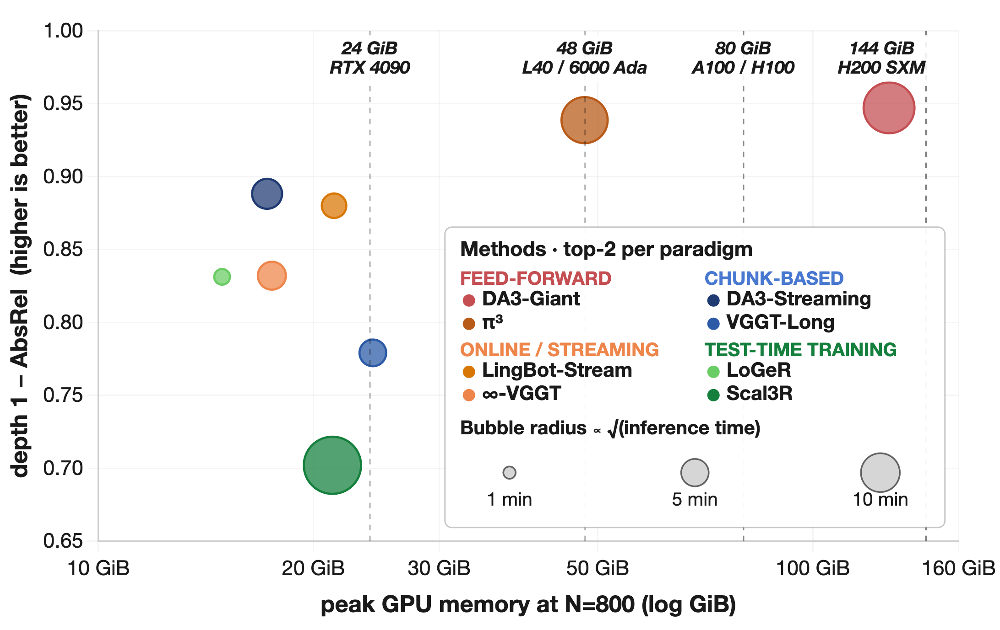
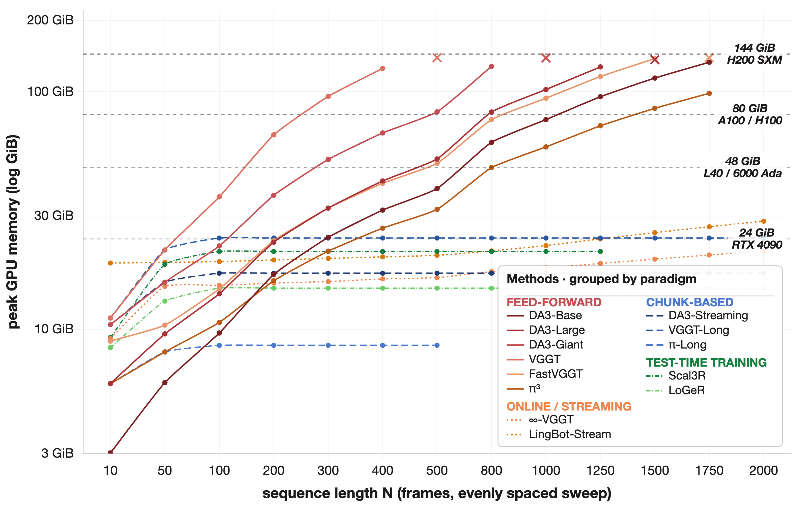
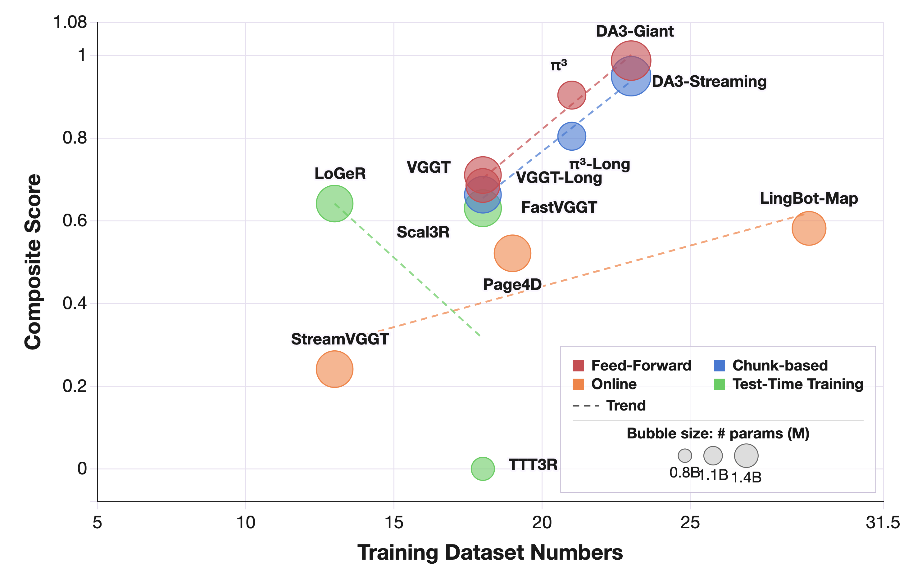
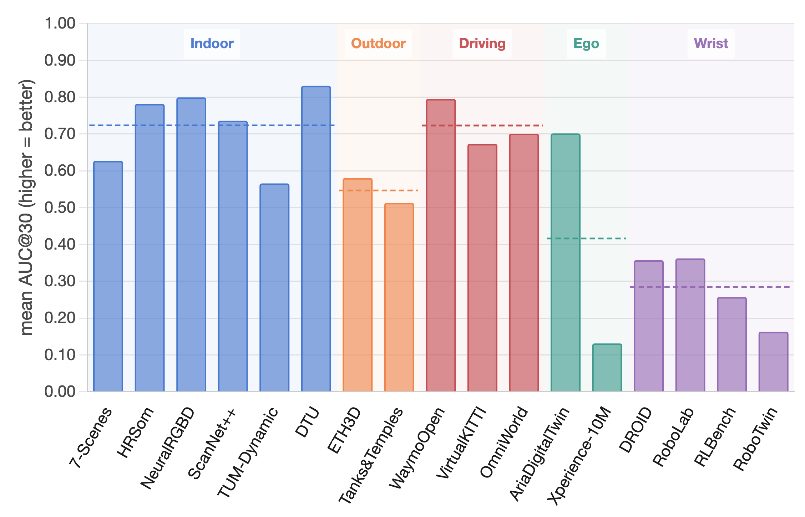

Finding 1
Full-Context Attention Sets the Accuracy Upper Bound on High-Memory GPUs.
At the same input budget, globally coupled feed-forward models occupy the strongest accuracy region.

Is your spatial foundation model an all-round player?

Dataset tags and density regimes. Fixed scene counts and consumed frames for the unified protocol.
| Dataset | Environment | Dynamics | Viewpoint | Source | Scenes | Frames | |||
|---|---|---|---|---|---|---|---|---|---|
| Single | Sparse | Medium | Dense | ||||||
At the same input budget, globally coupled feed-forward models occupy the strongest accuracy region.

Streaming, chunk-wise, and TTT models trade some accuracy for dense long-horizon reconstruction.

Curated pseudo-GT supervision outperforms larger but noisier training mixtures at comparable scale.

Embodied viewpoints expose the largest field-level generalization drop; DA-Next targets this gap.

GLB Sample
| Method | Paradigm | Single | Sparse | Medium | Dense | Average | ||||||||||
|---|---|---|---|---|---|---|---|---|---|---|---|---|---|---|---|---|
| AbsRel↓ | AbsRel↓ | AUC@30↑ | AbsRel↓ | AUC@30↑ | ATE↓ | F-Score↑ | AbsRel↓ | AUC@30↑ | ATE↓ | F-Score↑ | AbsRel↓ | AUC@30↑ | ATE↓ | F-Score↑ | ||
Citation
@article{peng2026spatialbench,
title = {SpatialBench: Is Your Spatial Foundation Model an All-Round Player?},
author = {Peng, Haosong and Li, Hao and Chen, Jiaqi and Pan, Yuhao and others},
journal = {arXiv preprint},
year = {2026}
}